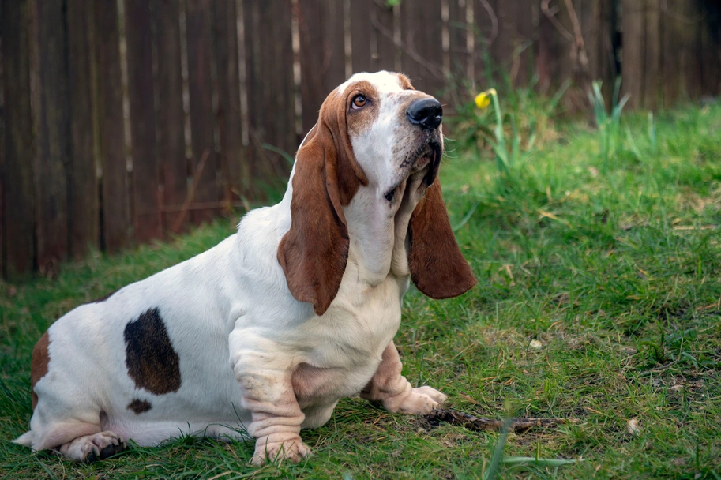

Presentación

Es un sabueso de estatura baja y cuerpo fuerte con patas cortas, orejas largas y piel suelta alrededor del cuello que le da una apariencia distintiva. Su pelaje es corto, denso y puede presentarse en combinaciones de colores como tricolor o bicolor, lo que lo hace muy reconocible entre otras razas de perro.
Personalidad
Tiene un temperamento tranquilo, afectuoso y amigable, característica que lo convierte en un excelente perro de compañía. Disfruta de la presencia humana y suele llevarse bien con niños y otras mascotas. A pesar de ser calmado, puede ser obstinado y algo independiente durante el adiestramiento, por lo que requiere paciencia y refuerzo positivo.
Origen
Proviene de Francia, donde fue desarrollado como sabueso para la caza de pequeños animales y seguimiento de rastros gracias a su extraordinario olfato. Con el tiempo se popularizó como perro de compañía fuera del entorno de caza, apreciado por su carácter tranquilo y afable.
Salud
Suele tener una esperanza de vida de alrededor de 10 a 12 años y, aunque es generalmente saludable, es propenso a algunas afecciones relacionadas con su estructura, como problemas articulares, espalda, oído e infecciones cutáneas si no se le cuida adecuadamente. Mantener un peso adecuado y controles veterinarios regulares ayuda a reducir riesgos.
Aseo
Su pelaje corto requiere un cepillado semanal para controlar la muda y mantener la piel y el pelo en buen estado. Es importante prestar atención a la higiene de las orejas, ya que su forma favorece la acumulación de suciedad y humedad, lo que puede provocar infecciones si no se limpia con regularidad.
Nutrición
Debido a su tamaño y metabolismo, necesita una dieta equilibrada adaptada a perros de tamaño medio con actividad moderada. Se recomienda alimento de buena calidad repartido en varias porciones al día y controlar las calorías para evitar la obesidad, ya que esta raza puede ganar peso con facilidad si come en exceso.